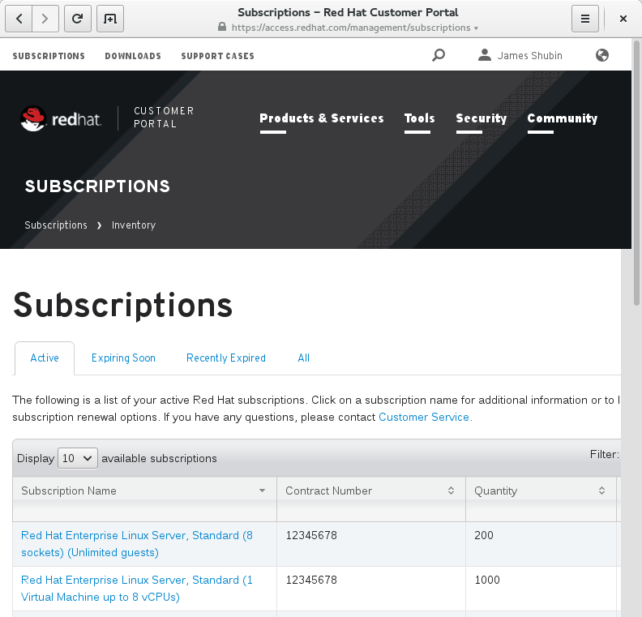
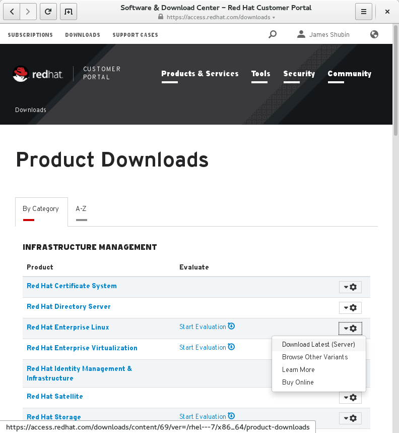
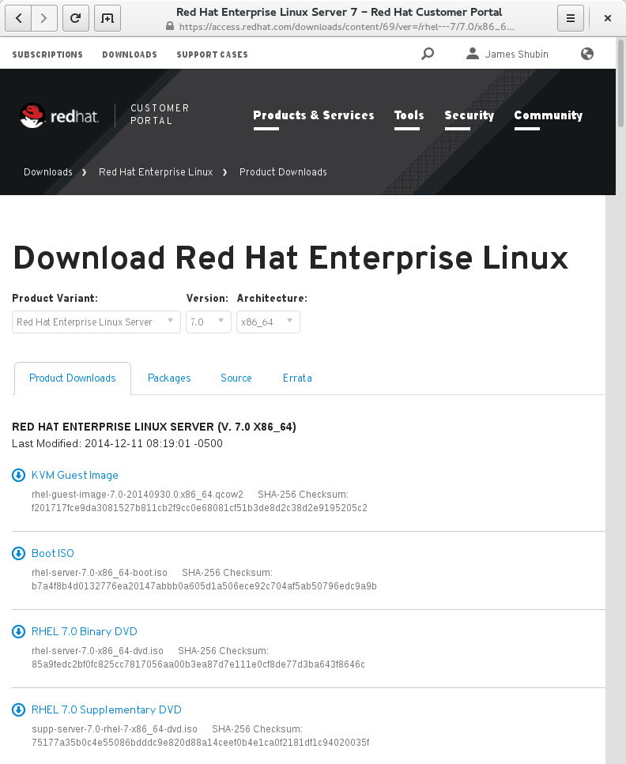

Vagrant is a great tool for development, but Red Hat Enterprise Linux (RHEL) customers have typically been left out, because it has been impossible to get RHEL boxes! It would be extremely elegant if hackers could quickly test and prototype their code on the same OS as they’re running in production.
Secondly, when hacking on projects that have a long initial setup phase (eg: a long rpm install) it would be excellent if hackers could roll their own modified base boxes, so that certain common operations could be re-factored out into the base image.
This all changes today.
Please continue reading if you’d like to know how :)
Subscriptions:
In order to use RHEL, you first need a subscription. If you don’t already have one, go sign up… I’ll wait. You do have to pay money, but in return, you’re funding my salary (and many others) so that we can build you lots of great hacks.
Prerequisites:
I’ll be working through this whole process on a Fedora 21 laptop. It should probably work on different OS versions and flavours, but I haven’t tested it. Please test, and let me know your results! You’ll also need virt-install and virt-builder installed:
$ sudo yum install -y /usr/bin/virt-{install,builder}
Step one:
Login to https://access.redhat.com/ and check that you have a valid subscription available. This should look like this:
|  |
| A view of my available subscriptions. |
If everything looks good, you’ll need to download an ISO image of RHEL. First head to the downloads section and find the RHEL product:
|  |
| A view of my available product downloads. |
In the RHEL download section, you’ll find a number of variants. You want the RHEL 7.0 Binary DVD:
|  |
| A view of the available RHEL downloads. |
After it has finished downloading, verify the SHA-256 hash is correct, and continue to step two!
$ sha256sum rhel-server-7.0-x86_64-dvd.iso
85a9fedc2bf0fc825cc7817056aa00b3ea87d7e111e0cf8de77d3ba643f8646c rhel-server-7.0-x86_64-dvd.iso
Step two:
Grab a copy of vagrant-builder:
$ git clone https://github.com/purpleidea/vagrant-builder
Cloning into 'vagrant-builder'...
[...]
Checking connectivity... done.
I’m pleased to announce that it now has some documentation! (Patches are welcome to improve it!)
Since we’re going to use it to build RHEL images, you’ll need to put your subscription manager credentials in ~/.vagrant-builder/auth.sh:
$ cat ~/.vagrant-builder/auth.sh
# these values are used by vagrant-builder
USERNAME='purpleidea@redhat.com' # replace with your access.redhat.com username
PASSWORD='<a href="http://bash.org/?244321">hunter2</a>' # replace with your access.redhat.com password
This is a simple shell script that gets sourced, so you could instead replace the static values with a script that calls out to the GNOME Keyring. This is left as an exercise to the reader.
To build the image, we’ll be working in the v7/ directory. This directory supports common OS families and versions that have high commonality, and this includes Fedora 20, Fedora 21, CentOS 7.0, and RHEL 7.0.
Put the downloaded RHEL ISO in the iso/ directory. To allow qemu to see this file, you’ll need to add some acl’s:
$ sudo -s # do this as root
$ cd /home/
$ getfacl james # james is my home directory
# file: james
# owner: james
# group: james
user::rwx
group::---
other::---
$ setfacl -m u:qemu:r-x james # this is the important line
$ getfacl james
# file: james
# owner: james
# group: james
user::rwx
user:qemu:r-x
group::---
mask::r-x
other::---
If you have an unusually small /tmp directory, it might also be an issue. You’ll need at least 6GiB free, but a bit extra is a good idea. Check your free space first:
$ df -h /tmp
Filesystem Size Used Avail Use% Mounted on
tmpfs 1.9G 1.3M 1.9G 1% /tmp
Let’s increase this a bit:
$ sudo mount -o remount,size=8G /tmp
$ df -h /tmp
Filesystem Size Used Avail Use% Mounted on
tmpfs 8.0G 1.3M 8.0G 1% /tmp
You’re now ready to build an image…
Step three:
In the versions/ directory, you’ll see that I have provided a rhel-7.0-iso.sh script. You’ll need to run it from its parent directory. This will take a while, and will cause two sudo prompts, which are required for virt-install. One downside to this process is that your https://access.redhat.com/ password will be briefly shown in the virt-builder output. Patches to fix this are welcome!
$ pwd
/home/james/code/vagrant-builder/v7
$ time ./versions/rhel-7.0-iso.sh
[...]
real 38m49.777s
user 13m20.910s
sys 1m13.832s
$ echo $?
0
With any luck, this should eventually complete successfully. This uses your cpu’s virtualization instructions, so if they’re not enabled, this will be a lot slower. It also uses the network, which in North America, means you’re in for a wait. Lastly, the xz compression utility will use a bunch of cpu building the virt-builder base image. On my laptop, this whole process took about 30 minutes. The above run was done without an SSD and took a bit longer.
The good news is that most of hard work is now done and won’t need to be repeated! If you want to see the fruits of your CPU labour, have a look in: ~/tmp/builder/rhel-7.0-iso/.
$ ls -lAhGs
total 4.1G
1.7G -rw-r--r--. 1 james 1.7G Feb 23 18:48 box.img
1.7G -rw-r--r--. 1 james 41G Feb 23 18:48 builder.img
12K -rw-rw-r--. 1 james 10K Feb 23 18:11 docker.tar
4.0K -rw-rw-r--. 1 james 388 Feb 23 18:39 index
4.0K -rw-rw-r--. 1 james 64 Feb 23 18:11 metadata.json
652M -rw-rw-r--. 1 james 652M Feb 23 18:50 rhel-7.0-iso.box
200M -rw-r--r--. 1 james 200M Feb 23 18:28 rhel-7.0.xz
As you can see, we’ve produced a bunch of files. The rhel-7.0-iso.box is your RHEL 7.0 vagrant base box! Congratulations!
Step four:
If you haven’t ever installed vagrant, you’ll pleased to know that as of last week, vagrant and vagrant-libvirt RPM’s have hit Fedora 21! I started trying to convince the RPM wizards about a year ago, and we finally have something that is quite usable! Hopefully we’ll iterate on any packaging bugs, and keep this great work going! There are now only three things you need to do to get a working vagrant-libvirt setup on Fedora 21:
$ yum install -y vagrant-libvirt.bashrc add-on from: https://gist.github.com/purpleidea/8071962$ vagrant box add rhel-7.0-iso.box --name rhel-7.0
Using the box effectively:
Having a base box is great, but having to manage subscription-manager manually isn’t fun in a DevOps environment. Enter Oh-My-Vagrant (omv). You can use omv to automatically register and unregister boxes! Edit the omv.yaml file so that the image variable refers to the base box you just built, enter your https://access.redhat.com/ username and password, and vagrant up away!
$ cat omv.yaml
---
:domain: example.com
:network: 192.168.123.0/24
:image: rhel-7.0
:boxurlprefix: ''
:sync: rsync
:folder: ''
:extern: []
:puppet: false
:classes: []
:docker: false
:cachier: false
:vms: []
:namespace: omv
:count: 2
:username: 'purpleidea@redhat.com'
:password: 'hunter2'
:poolid: true
:repos: []
$ vs
Current machine states:
omv1 not created (libvirt)
omv2 not created (libvirt)
This environment represents multiple VMs. The VMs are all listed
above with their current state. For more information about a specific
VM, run `vagrant status NAME`.
You might want to set repos to be:
['rhel-7-server-rpms', 'rhel-7-server-extras-rpms']
but it depends on what subscriptions you want or have available. If you’d like to store your credentials in an external file, you can do so like this:
$ cat ~/.config/oh-my-vagrant/auth.yaml
---
:username: purpleidea@redhat.com
:password: hunter2
Here’s an actual run to see the subscription-manager action:
$ vup omv1
[...]
==> omv1: The system has been registered with ID: 00112233-4455-6677-8899-aabbccddeeff
==> omv1: Installed Product Current Status:
==> omv1: Product Name: Red Hat Enterprise Linux Server
==> omv1: Status: Subscribed
$ # the above lines shows that your machine has been registered
$ vscreen root@omv1
[root@omv1 ~]# echo thanks purpleidea!
thanks purpleidea!
[root@omv1 ~]# exit
Make sure to unregister when you are permanently done with a machine, otherwise your subscriptions will be left idle. This happens automatically on vagrant destroy when using Oh-My-Vagrant:
$ vdestroy omv1 # make sure to unregister when you are done
Unlocking shell provisioning for: omv1...
Running 'subscription-manager unregister' on: omv1...
Connection to 192.168.121.26 closed.
System has been unregistered.
==> omv1: Removing domain...
Idempotence:
One interesting aspect of this build process, is that it’s mostly idempotent. It’s able to do this, because it uses GNU Make to ensure that only out of date steps or missing targets are run. As a result, if the build process fails part way through, you’ll only have to repeat the failed steps! This speeds up debugging and iterative development enormously!
To prove this to you, here is what a second run looks like (after the first successful run):
$ time ./versions/rhel-7.0-iso.sh
real 0m0.029s
user 0m0.013s
sys 0m0.017s
As you can see it completes almost instantly.
Variants:
To build a variant of the base image that we just built, create a versions/*.sh file, and modify the variables to add your changes in. If you start with a copy of the ~/tmp/builder/${VERSION}-${POSTFIX} folder, then you shouldn’t need to repeat the initial steps. Hint: btrfs is excellent at reflinking data, so you don’t unnecessarily store multiple copies!
Plumbing Pipeline:
What actually happens behind the scenes? Most of the magic happens in the Makefile. The relevant series of transforms is as follows:
Future work:
While I expect you’ll love using these RHEL base boxes with Vagrant, the above builder methodology is currently not officially supported, and I can’t guarantee that the RHEL vagrant dev environments will be either. I’m putting this out there for the early (DevOps) adopters who want to hack on this and who didn’t want to invent their own build tool chain. If you do have issues, please leave a comment here, or submit a vagrant-builder issue.
Thanks:
Special thanks to Richard WM Jones and Pino Toscano for their great work on virt-builder that this is based on. Additional thanks to Randy Barlow for encouraging me to work on this. Thanks to Red Hat for continuing to pay my salary :)
Subscriptions?
If I’ve convinced you that you want some RHEL subscriptions, please go have a look, and please let Red Hat know that you appreciated this post and my work.
Happy Hacking!
James
UPDATE: I’ve tested that this process also works with the new RHEL 7.1 release! UPDATE: I’ve tested that this process also works with the new RHEL 7.2 release!
Your comment has been submitted and will be published if it gets approved.
Click here to see the patch you generated.
{kind=link}
{kind=link}
{kind=link}
Comments
Nothing yet.
Post a comment